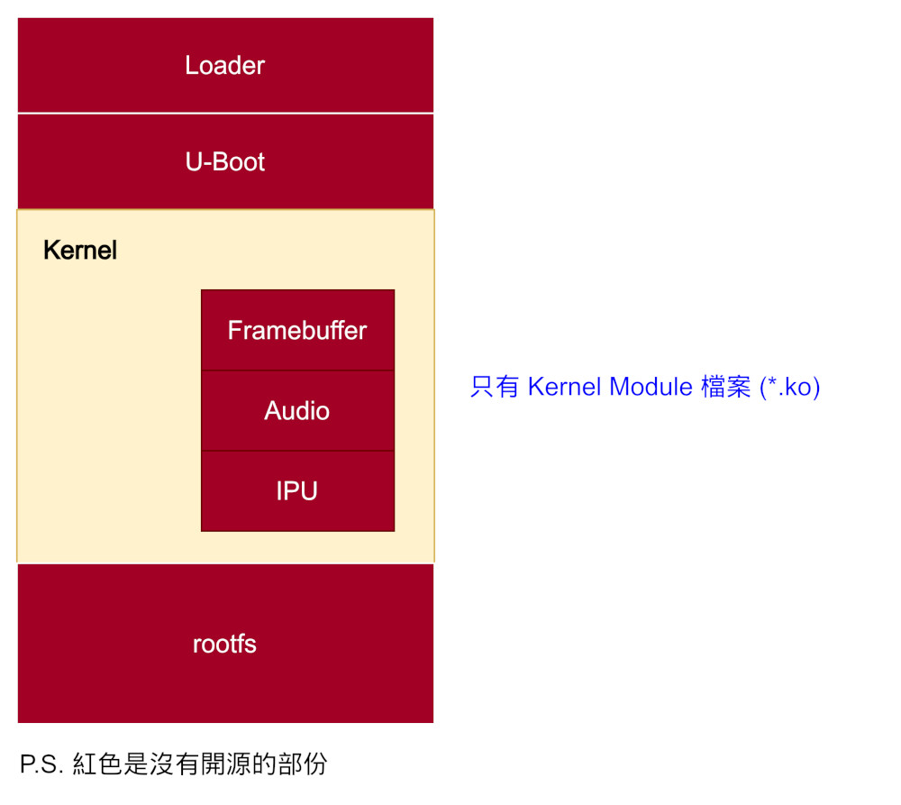
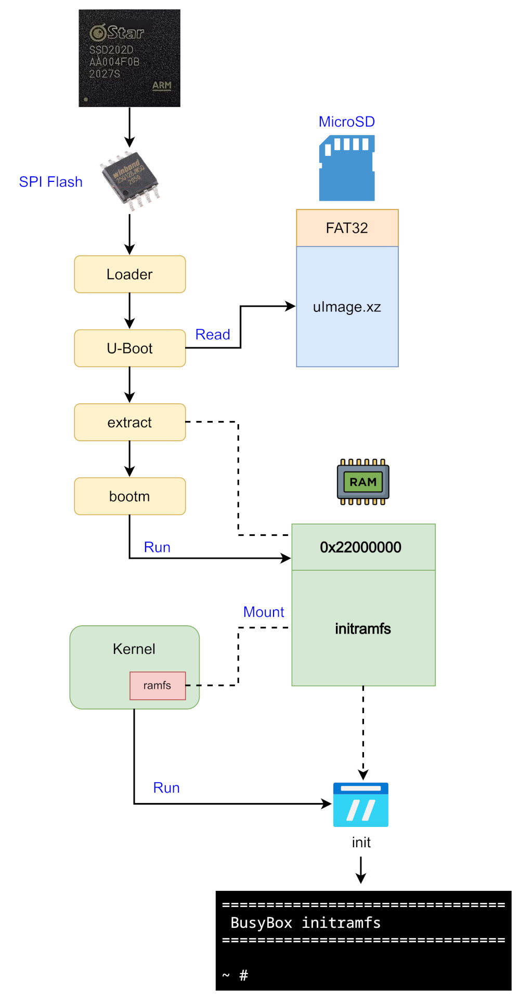

Steward
分享是一種喜悅、更是一種幸福
掌機 - Miyoo Mini Flip - Build Kernel
參考資料：
https://github.com/steward-fu/website/releases/edit/miyoo-mini-flip
目前Miyoo Mini Flip閉源的狀態如下，除了沒有源代碼之外，SSD202D的Datasheet(顯示、音效、底層硬體)也沒有釋出，不過Loader、U-Boot主要是拿來初始化RAM以及載入、啟動Kernel的用途，因此，這兩個部份我們剛好可以省心不用改，值得注意的部份是，東山哥釋出的源代碼並沒有包含Framebuffer、Audio、IPU等重要模組，應該是廠商一開始就不打算公開，不過至少我們可以編譯出一個可以載入這些模組的Kernel，這樣的功能其實已經符合我們的需求，至於rootfs部份，由於我們打算盡可能重頭做起，因此，我們不需要那部份的源代碼，我們只需要知道做哪些設定就可以讓Kernel模組運作即可

司徒目前已經整理一版可以透過initramfs啟動的Kernel，編譯步驟如下：
$ cd $ wget https://github.com/steward-fu/website/releases/download/miyoo-mini-flip/ssd202d_toolchain.tar.gz $ tar xvf ssd202d_toolchain.tar.gz $ sudo mv ssd202d /opt $ wget https://github.com/steward-fu/website/releases/download/miyoo-mini-flip/kernel_initramfs.tar.gz $ tar xvf kernel_initramfs.tar.gz $ cd kernel $ export PATH=/opt/ssd202d/bin:$PATH $ ARCH=arm CROSS_COMPILE=arm-linux-gnueabihf- make distclean $ ARCH=arm CROSS_COMPILE=arm-linux-gnueabihf- make mmf_defconfig $ ARCH=arm CROSS_COMPILE=arm-linux-gnueabihf- LOADADDR=0x22000000 make uImage modules -j4
接著準備一張MicroSD並且格式化成FAT32，將arch/arm/boot/uImage.xz放到根目錄下，啟動到U-Boot命令列，輸入如下命令
mmc dev 0; fatload mmc 0:1 0x22000000 uImage.xz; bootm 0x22000000
開機完成後，就可以看到Boot Log
================================ BusyBox initramfs ================================ ~ #
執行流程：
